Firmware 2.2.1(4) Benutzerhandbuch [10. November 2025]
Einführung
OpenSprinkler ist ein quelloffener, webbasierter Sprinkler-/Bewässerungscontroller, der als Ersatz für herkömmliche Sprinklercontroller ohne Internetverbindung entwickelt wurde. Zu seinen wichtigsten Vorteilen zählen eine intuitive Benutzeroberfläche, Fernzugriff und eine intelligente, wetterbasierte Bewässerungssteuerung. Er eignet sich ideal für Hausbesitzer und Unternehmen in Anwendungsbereichen wie Rasen- und Gartenbewässerung, Pflanzenbewässerung, Tropfbewässerung, Hydrokultur usw.
Die hier dokumentierte OpenSprinkler-Hardware ist in drei Produktfamilien erhältlich:
- OpenSprinkler v3 – Mit integriertem WLAN, zwei unabhängigen Sensoranschlüssen und einem optionalen kabelgebundenen Ethernet-Modul. Das Gerät ist komplett montiert und mit Firmware vorinstalliert.
- OpenSprinkler Pi (OSPi) – Wird von einem Raspberry Pi (RPi) betrieben und erfordert einige Montagearbeiten (z. B. den Anschluss des RPi) sowie die Installation der Firmware.
- OpenSprinklerPro – Wird bei Ventilen, COM, Sensoren und Stromversorgung wie OpenSprinkler v3.0-3.3 angeschlossen, verwendet aber die weiterentwickelte OpenSprinklerShop-Firmware für ESP32-C5 mit Pro-Erweiterungen. Die aktuelle OpenSprinklerShop-/OpenSprinklerPro-Firmwarelinie ist 2.4.0(199).
Jeder Controller verfügt standardmäßig über 8 Zonen, die durch Zonen-Erweiterungen (jeweils um 16 Zonen) erweitert werden können. OpenSprinkler v3 unterstützt bis zu 72 Zonen, OSPi bis zu 200 Zonen. Darüber hinaus ist OpenSprinkler v3 in drei Leistungsvarianten erhältlich:
- AC-betrieben – Wird mit einem orangefarbenen Anschlussblock (v3.0-3.3) oder einem roten Stromanschluss (v3.4) geliefert. Erfordert einen 24-V-Wechselstromtransformator (standardmäßig NICHT im Lieferumfang enthalten; als Zusatzoption erhältlich, oder verwenden Sie Ihren eigenen 24-VAC-Transformator).
- Gleichstrombetrieben – Wird mit einem schwarzen Stromanschluss (v3.0-3.3) oder USB-C-Anschluss (v3.4) geliefert. Ein kompatibler Netzadapter ist für Nordamerika im Lieferumfang enthalten. Betrieb mit 6V–24VDC möglich, einschließlich 12-VDC-Solarpanel. Trotz Gleichstromversorgung ist es für den Betrieb von 24-VAC-Sprinklerventilen sowie DC-Ventilen ohne Verriegelung ausgelegt.
- LATCH – Wird mit einem schwarzen Stromanschluss und einem 7,5-VDC-Adapter für Nordamerika geliefert. Speziell für die Verwendung mit Magnetventilen mit Verriegelung konzipiert.
Was ist neu in dieser Firmware?
- Unterstützung für DC-betriebenen OpenSprinkler v3.4, den ersten OpenSprinkler mit USB-C. Unterstützt USB PD (Power Delivery) über CH224 und erlaubt benutzerdefinierte PD-Spannung.
- Vorzeitiges Starten für manuelle Aktionen: Manuelle Stationsläufe, Einmalprogramme und manuell gestartete Programme unterstützen jetzt benutzerdefinierte Warteschlangenoptionen:
- Anhängen: Nach anderen ausführen
- An den Anfang stellen: Sofort ausführen und andere pausieren
- Ersetzen: Sofort ausführen und andere stoppen (Standardverhalten in früheren Firmware-Versionen).
- OSPi GPIO-Backend: Umstellung von
libgpioauflgpiofür eine einfachere API, kompatibel mit Raspbian Trixie, und zur Vermeidung vonlibgpiodv2-Breaking-Changes. - Stabilere Strommessung: Exponentielle gleitende Mittelwertfilterung (EMA) für stabilere Strommesswerte hinzugefügt.
- Flexible Wetterskript-URL: Unterstützung für explizites
http/httpsund benutzerdefinierte Ports, sodass benutzerdefinierte Wetterdienste einfach eingebunden werden können. - Optimierte statische Seiten: AP-Startseite und Firmware-Update-Seiten werden als minimiertes und komprimiertes HTML ausgeliefert, für schnellere Ladezeiten und reduzierten Speicherverbrauch.
Änderungen seit Firmware 2.2.1(2) (aus 2.2.1(3)):
- Unterstützung für mehrtägige Bewässerungsmengen: Bei Verwendung der Wetteranpassungsmethoden Zimmerman oder ETo können Intervallprogramme Bewässerungsmengen auf Mehrtagesdurchschnitten basieren, anstatt nur auf Daten des Vortages.
- Wetterbedingte Einschränkungen: Programme können aufgrund von niedrigen Temperaturen, Regenvorhersagen oder der kalifornischen Regelung übersprungen werden.
- Erkennung und Benachrichtigung bei Überstrom-/Unterstrom-Fehlern: Die Firmware erkennt Überstrom (kurzgeschlossene Magnetventile, fehlerhafte Verkabelung) und Unterstrom (gebrochener Draht, defektes Magnetventil) mit einstellbaren Schwellenwerten.
- Fehlerbehebungen: Gleichzeitige Zonenaktivierung um 1 Sekunde versetzt, Benachrichtigungen für übersprungene Programme, Wetterabfragen über HTTPS, URL-Decodierungs-Bugfix.
Hardware-Schnittstelle
OpenSprinklerPro
OpenSprinklerPro basiert auf der ESP32-C5-Hardwareplattform mit WiFi 6, BLE und wahlweise Zigbee- oder Matter-Firmwarevariante. Ventile, COM, Sensoren und Stromversorgung werden wie bei OpenSprinkler v3.0-3.3 angeschlossen; die Positionen der Anschlüsse und die zusätzlichen Pro-Schnittstellen zeigt dieses Diagramm. Die Software ist die weiterentwickelte OpenSprinklerShop-Firmware mit Pro-Funktionen, nicht die ältere Basis-Firmware des ursprünglichen Upstream-Handbuchs.
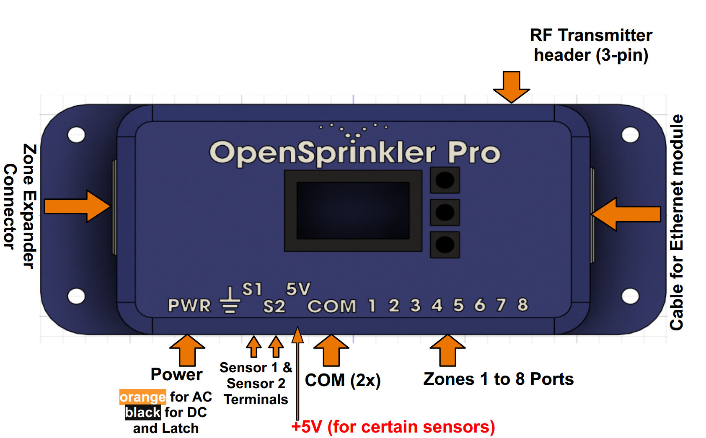
OpenSprinkler v3.4 (neues Gehäuse)
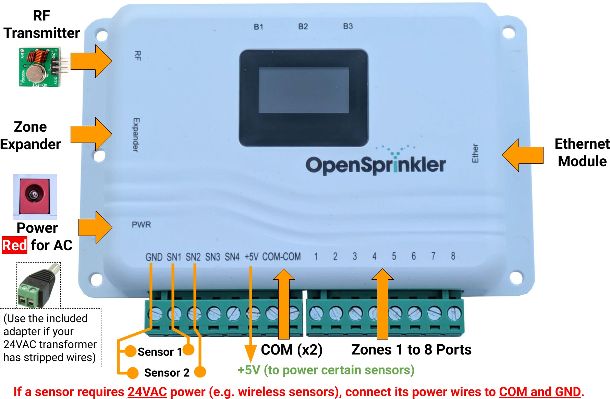
OpenSprinkler v3.0-3.3
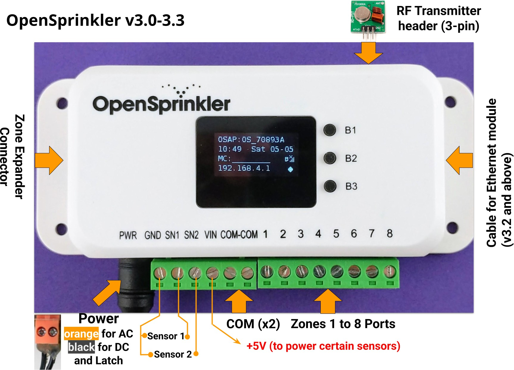
OpenSprinkler Pi (OSPi)
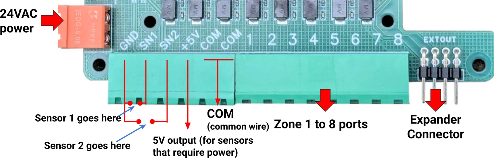
Anschlussdiagramm für Zonenkabel
Das folgende Diagramm zeigt, wie Ventile am Hauptcontroller und an Expandern verkabelt werden.
Grundlagen
- Jedes Ventil-Magnetventil hat zwei Drähte. Bündeln Sie je einen Draht von jedem Ventil (über Hauptcontroller und alle Expander hinweg) zu einem COM-Draht (Common). Schließen Sie diesen COM-Draht an den COM-Anschluss des Controllers an (NICHT GND verwenden!).
- OpenSprinkler hat zwei COM-Anschlüsse, die intern verbunden sind – Sie können beide verwenden.
- Der andere Draht von jedem Ventil wird an den jeweiligen Zonenanschluss (1, 2, 3, ...) angeschlossen.
Polarität
- AC-Ventile haben keine Polarität – beide Drähte können COM oder Zonenkabel sein.
- Verriegelungsventile sind polarisiert – verbinden Sie den Plus-Draht (meist Rot) mit COM, und den Minus-Draht (meist Schwarz) mit einem Zonenanschluss.
- Einige DC-Ventile ohne Verriegelung sind ebenfalls polarisiert. Auch hier: Plus → COM, Minus → Zone.
Hauptventil / Pumpenrelais
- Wenn Sie ein Hauptventil oder Pumpenstartrelais haben, schließen Sie es an einen beliebigen Zonenanschluss an – OpenSprinkler verwendet softwareseitig definierte Master-/Pumpenzonen, sodass Sie jede Zone als Master konfigurieren können.
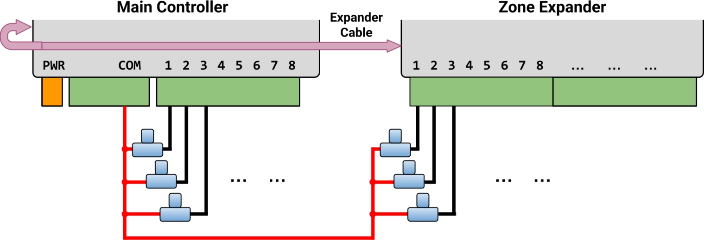
Installation
AC-Strom (Internationale Benutzer)
Für den AC-betriebenen OpenSprinkler müssen Sie einen 24-VAC-Transformator verwenden, der dem Netzspannungsstandard Ihres Landes entspricht. Ein inkompatibler Transformator kann den Controller beschädigen. Wenn kein geeigneter 24-VAC-Transformator verfügbar ist, ziehen Sie den DC-betriebenen OpenSprinkler in Betracht (6–24VDC Eingang; v3.4 nutzt USB-C). Schließen Sie niemals Netzstrom direkt an den Controller an.
OpenSprinkler ist NICHT wasserdicht
Für die Installation im Außenbereich verwenden Sie ein wetterfestes Gehäuse.
Video-Anleitungen
Video-Anleitungen und Tutorials sind auf der OpenSprinkler-Support-Seite verfügbar.
Schritt 1: Vorbereitung
Beschriften Sie die Kabel Ihres vorhandenen Sprinkler-Controllers sorgfältig und entfernen Sie sie. In der Regel finden Sie dort:
- Stromversorgungskabel (falls Sie Ihr bestehendes Netzteil weiterverwenden möchten)
- Ein COM-Kabel (Common)
- Ein oder mehrere Zonenkabel
- (Optional) Ein Master-Zone-/Pumpenstartrelais-Kabel
- (Optional) Regen-/Boden-/Durchflusssensor-Kabel
Schritt 2: OpenSprinkler verkabeln
Beachten Sie die Abschnitte Hardware-Schnittstelle und Anschlussdiagramm.
OpenSprinkler verwendet abnehmbare Klemmenblöcke für einfache Verkabelung. Zum Entnehmen fassen Sie ein Ende fest an, wackeln vorsichtig und ziehen es heraus. Stecken Sie die Drähte vollständig ein und ziehen Sie die Schrauben fest an.
Stromversorgung:
- OpenSprinklerPro: Schließen Sie ihn wie OpenSprinkler v3.0-3.3 an. Bei AC-Modellen werden die 24-VAC-Drähte an den Strom-Anschlussblock geführt; bei DC-/Latch-artiger Verdrahtung gelten die Polaritätshinweise von v3.0-3.3 DC/Latch. Die Pro-Software und die UI sind neuer und enthalten zusätzliche OpenSprinklerPro-Funktionen.
- OpenSprinkler v3.4 AC: Stecken Sie den 24-VAC-Transformator in den roten Stromanschluss.
- Bei abisolierten Drähten verwenden Sie den mitgelieferten Schraubklemmen-Stecker-Adapter.
- OpenSprinkler v3.0-3.3 AC: Stecken Sie die 24-VAC-Drähte in den orangefarbenen Anschlussblock.
- AC hat keine Polarität – die beiden Drähte haben keinen Unterschied.
- OpenSprinkler v3.4 DC: Stecken Sie das USB-C-Kabel in den USB-C-Anschluss (PWR).
- OpenSprinkler v3.0-3.3 DC und Latch: Stecken Sie den DC-Adapter in den schwarzen Stromanschluss.
- Der COM-Anschluss ist positiv (+). Wenn Ihre Ventilkabel polarisiert sind: Plus an COM, Minus an den Zonenanschluss.
Sensoren:
- Signalkabel an SN1 + GND anschließen (oder SN2 + GND bei einem zweiten Sensor).
- OpenSprinkler verwendet GND (NICHT COM) als gemeinsamen Anschluss für Sensoreingänge. Schließen Sie KEINE Sensorkabel an COM an.
- Beim AC-betriebenen Modell können Sensoren, die 24VAC benötigen (z. B. Funksensoren), über COM und GND mit Strom versorgt werden.
- DC- und Latch-Modelle liefern kein 24VAC und können diese Sensoren nicht versorgen.
Weitere Details zu spezifischen Sensoren finden Sie unter Sensor-Einrichtung.
Schritt 3: Zonen-Erweiterungen (optional)
Vor dem Verkabeln von Expandern ausschalten
Schalten Sie immer den Hauptcontroller aus, bevor Sie Expander anschließen, trennen oder umkonfigurieren.
Richtigen Anschluss prüfen
Überprüfen Sie im Anschlussdiagramm, dass der Stecker im richtigen Port sitzt. Verwenden Sie NICHT den mit Ether markierten Anschluss (der ist für das Ethernet-Modul)!
-
Stecken Sie bei ausgeschaltetem Hauptcontroller ein Ende des Expander-Kabels in den Zonen-Expander-Anschluss von OpenSprinkler (polarisiert; passt nur in einer Richtung).
-
Anderes Ende des Kabels verbinden:
- OpenSprinkler v3: An einem der beiden Anschlüsse des Expanders (beide sind gleichwertig). Bei mehreren Expandern mit zusätzlichen Kabeln verbinden.
- OpenSprinkler Pi (OSPi): An den IN-Anschluss des Expanders. Bei mehreren Expandern in Reihe über OUT → IN verbinden.
- Index einstellen:
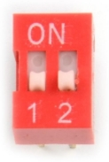
- Für OpenSprinkler v3 muss ein eindeutiger Index (1-4) für jeden Expander mittels DIP-Schalter auf der Rückseite eingestellt werden:
1.Expander: Index1(DIP-Schalter:DOWN DOWN)2.Expander: Index2(UP DOWN)3.Expander: Index3(DOWN UP)4.Expander: Index4(UP UP).
- Für OSPi: Es gibt keinen DIP-Schalter – der Index ergibt sich aus der Reihenfolge der Verkettung.
- Für OpenSprinkler v3 muss ein eindeutiger Index (1-4) für jeden Expander mittels DIP-Schalter auf der Rückseite eingestellt werden:
- Zonen-Zuordnung:
- Hauptcontroller: Zonen
1-8 1.Expander: Zonen9-242.Expander: Zonen25-403.Expander: Zonen41-564.Expander: Zonen57-72
- Hauptcontroller: Zonen
Anzahl der Zonen festlegen: Die Firmware erkennt automatisch den höchsten Expander-Index, Sie müssen aber die Gesamtzahl der Zonen manuell in den Software-Einstellungen festlegen. Sie können auch mehr Zonen aktivieren, als physisch vorhanden sind, um sie als Virtuelle Zonen (Remote/HTTP(S)/RF) zu nutzen. Siehe Stationstypen.
Schritt 4: WLAN / Ethernet einrichten
WLAN (OpenSprinkler v3, alle Versionen)
- Beim ersten Einschalten (oder nach WLAN-Reset) startet OpenSprinkler im AP-Modus (Access Point) und sendet eine SSID wie
OS_xxxxxx, die auf dem LCD angezeigt wird. Verbinden Sie Ihr Smartphone/Computer mit diesem offenen WLAN.- Auf Android: Falls die Warnung „WLAN hat keine Internetverbindung" erscheint, wählen Sie „Ja", um verbunden zu bleiben.
- Öffnen Sie einen Browser und gehen Sie zu
192.168.4.1, um die WLAN-Einrichtungsseite aufzurufen. Wählen Sie die SSID Ihres Heim-WLANs und geben Sie dessen Passwort ein (das WLAN-Passwort Ihres Routers, NICHT das OpenSprinkler-Passwort!). BSSID und Kanal werden automatisch erkannt. - Klicken Sie auf Verbinden. Bei erfolgreicher Verbindung startet der Controller im WLAN-Stationsmodus neu.
- Drücken Sie B1 am OpenSprinkler, um die vom Router zugewiesene Geräte-IP anzuzeigen. Geben Sie diese IP in einem Browser oder der OpenSprinkler-App ein.
- Das Standard-Gerätepasswort lautet opendoor. Ändern Sie es aus Sicherheitsgründen sofort nach der Einrichtung.
Kabelgebundenes Ethernet (OpenSprinkler v3.2 und neuer)
- Schalten Sie den Hauptcontroller aus.
- OpenSprinkler v3.4: Stecken Sie den Flachbandkabel-Stecker fest in den mit Ether markierten Anschluss (auf der rechten Seite des Controllers).
- Verwenden Sie NICHT den mit Expander markierten Anschluss – der ist nur für Zonen-Erweiterungen!
- OpenSprinkler v3.2-3.3: Stecken Sie den Flachbandkabel-Stecker fest in das Ethernet-Modul (polarisiert; passt nur in einer Richtung).
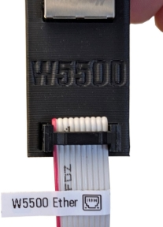
- Schließen Sie ein RJ45-Ethernet-Kabel von Ihrem Netzwerk an das Modul an.
- Schalten Sie den Controller ein. Er erkennt das Netzwerk und verbindet sich automatisch.
WLAN zurücksetzen
- Um den AP-Modus ohne Löschen anderer Einstellungen aufzurufen:
- Drücken Sie am eingeschalteten Controller B3+B2 (erst B3, dann schnell B2 – wie
Strg+C), und halten, bis „Reset to AP mode?" erscheint. - Klicken Sie B3 zum Bestätigen.
- Drücken Sie am eingeschalteten Controller B3+B2 (erst B3, dann schnell B2 – wie
- Alternativ über App/Web-UI: Optionen bearbeiten → Zurücksetzen → WLAN zurücksetzen.
- Falls beides nicht funktioniert, ist ein Werksreset erforderlich (siehe unten).
Gerätepasswort zurücksetzen
Wenn Sie das Gerätepasswort vergessen haben:
- Trennen Sie OpenSprinkler von der Stromversorgung.
- Schließen Sie es wieder an. Sobald das OpenSprinkler-Logo erscheint, halten Sie B3 gedrückt, bis „Setup Options" angezeigt wird.
- Klicken Sie wiederholt auf B3, bis „Ignore Password" erscheint. Klicken Sie auf B1, um „Yes" auszuwählen.
- Halten Sie B3 gedrückt, bis der Controller neu startet.
Sie können nun ohne Passwort zugreifen. Ändern Sie aus Sicherheitsgründen sofort das Passwort und setzen Sie „Ignore Password" wieder auf „No".
Werkseinstellungen zurücksetzen
- Trennen Sie OpenSprinkler von der Stromversorgung.
- Schließen Sie es wieder an. Sobald das OpenSprinkler-Logo erscheint, halten Sie B1 gedrückt, bis „Reset?" angezeigt wird.
- Bestätigen Sie „Yes" und halten Sie B3 gedrückt, bis der Controller neu startet.
Alle Einstellungen werden gelöscht und auf die Werkseinstellungen zurückgesetzt.
LCD-Anzeige und Tasten
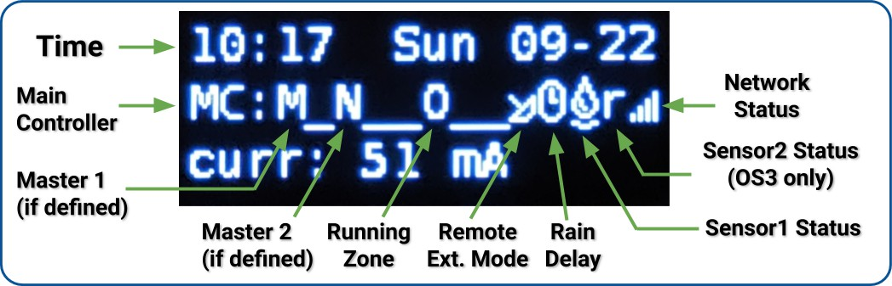
- Master-Zone 1 (falls konfiguriert) wird als Buchstabe
Mangezeigt; Master-Zone 2 alsN. - Standardmäßig zeigt das LCD den Status der ersten 8 Zonen auf dem Hauptcontroller (
MC) an. Jede aktive Zone wird mit einer dreistelligen Animation angezeigt:. o O - Klicken Sie auf B3, um durch jede Gruppe von 8 Zonen (
E1,E2,E3...) auf Expandern zu wechseln. - Wenn keine Zonen aktiv sind, wird oben die Meldung
(System Idle)angezeigt. - Wenn der Controller im Remote-Erweiterungsmodus ist, wird ein Radarsymbol 📡 angezeigt.
- Wenn Pause Station Runs oder Rain Delay aktiv ist, wird ein Uhrensymbol 🕒 angezeigt.
- Wenn Sensor 1 konfiguriert ist, erscheint ein Buchstabe:
r: Regensensors: Bodensensorp: Programmschalterf: Durchflusssensor- Ein aktivierter Regensensor wird als 🌧️, ein aktiver Bodensensor als 💧 angezeigt.
- Sensor 2 folgt dem gleichen Format wie Sensor 1.
Tastenfunktionen während des Betriebs:
| Taste | Funktion |
|---|---|
| Klick B1 | Anzeige der Geräte-IP, des Ports und des OTC-Status |
| Klick B2 | Anzeige der MAC-Adresse |
| Klick B3 | Umschalten zwischen Hauptcontroller (MC) und erweiterten Zonengruppen( E1, E2, E3 ...) |
| Halten B1 | Alle Zonen sofort stoppen |
| Halten B2 | Controller neu starten |
| Halten B3 | Manuell ein vorhandenes oder Testprogramm starten |
| B1+B2 | B1 halten, dann B2 drücken (wie Strg+C). Gateway-IP (Router-IP) anzeigen |
| B2+B1 | Externe (WAN) IP anzeigen |
| B2+B3 | Zeitstempel der letzten Wetterserver-Antwort anzeigen |
| B3+B2 | Für OpenSprinkler v3: Zurücksetzen auf AP-Modus (zur WLAN-Neukonfiguration) |
| B1+B3 | (Nur interne Tests) Schnelles Testprogramm starten (2 Sek. pro Zone) |
| B3+B1 | Zeitstempel des letzten Systemneustarts und Neustartgrund anzeigen |
Während des Hochfahrens, solange das OpenSprinkler-Logo angezeigt wird:
- B1: Werkseinstellungen zurücksetzen starten.
- B2: Internen Testmodus aufrufen.
- B3: Setup-Optionen aufrufen.
Weboberfläche – Übersicht
Die integrierte Weboberfläche von OpenSprinkler ist mit Smartphones, Tablets und Computern kompatibel. Sie können damit jederzeit Status einsehen, Einstellungen anpassen, Protokolle prüfen und Programme bearbeiten. Der Zugriff erfolgt über einen Webbrowser oder die kostenlose OpenSprinkler-App (suchen Sie nach OpenSprinkler in Ihrem App Store).
Video-Anleitungen
Video-Anleitungen und Tutorials sind auf der OpenSprinkler-Support-Seite verfügbar.
Lokaler Zugriff
- Drücken Sie am Controller die Taste B1, um die Geräte-IP und den HTTP-Port anzuzeigen. Wir bezeichnen die IP als
os-ip(z. B.192.168.1.122). - Öffnen Sie einen Browser und geben Sie
http://os-ipein (z. B.http://192.168.1.122). Bei einem benutzerdefinierten HTTP-Port (z. B.8765) geben Siehttp://os-ip:8765ein. - Das Standard-Gerätepasswort lautet opendoor. Ändern Sie es aus Sicherheitsgründen bei der ersten Verwendung.
- In der OpenSprinkler-App: Wählen Sie Gerät manuell hinzufügen und geben Sie die Geräte-IP ein.
- Der IP-Zugriff funktioniert, solange Sie sich im selben lokalen Netzwerk befinden.
Fernzugriff (über OTC)
- Für den Fernzugriff konfigurieren Sie zunächst ein OpenThings Cloud (OTC) Token.
- In der OpenSprinkler-App: Wählen Sie Gerät manuell hinzufügen und fügen Sie das OTC-Token anstelle einer IP ein.
- Im Webbrowser: Besuchen Sie
cloud.openthings.io/forward/v1/token, wobeitokenIhr OTC-Token ist. - Fernzugriff über OTC benötigt KEINE Portweiterleitung an Ihrem Router.
Startseite
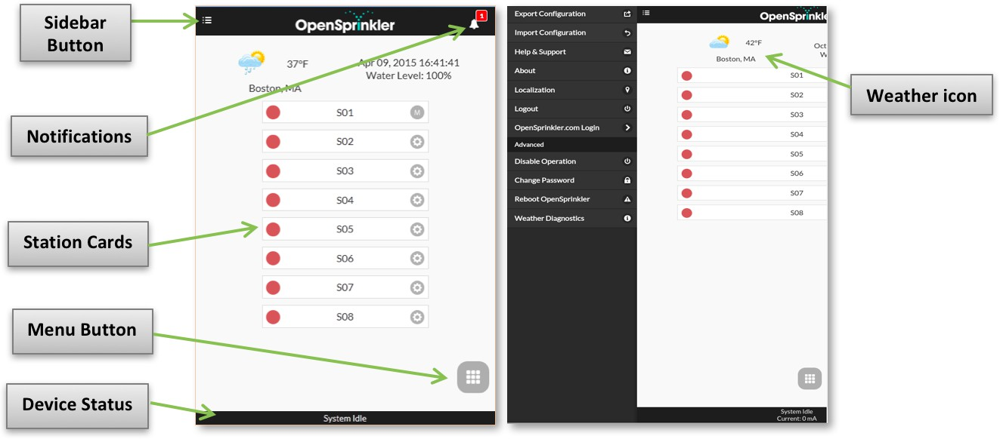
Die Startseite bietet eine Übersicht aller Zonen, des aktuellen Systemstatus und der Wetterbedingungen. Sie sehen ein Wettersymbol, die Gerätezeit, den Wasserstand, eine Liste aller Zonen mit deren aktuellem Status und den Gerätestatus am unteren Rand.
- Das Glockensymbol 🔔 (oben rechts) erscheint, wenn Benachrichtigungen verfügbar sind.
- Das Menüsymbol ☰ (oben links) öffnet das Seitenleistenmenü.
Seitenleistenmenü
Seitenleiste öffnen
Öffnen Sie das Seitenleistenmenü jederzeit durch Wischen von links nach rechts oder Tippen auf das ☰-Symbol oben links.
- Standorte verwalten: Verwalten mehrerer Controller (in der mobilen App verfügbar).
- Exportieren/Importieren der Konfiguration: Speichern oder Wiederherstellen aller Einstellungen und Programme. Nützlich vor Firmware-Upgrades oder Werksresets.
- Info: Zeigt App-Version, Firmware-Version und Hardware-Version an.
- Lokalisierung: Anzeigesprache ändern.
- OpenSprinkler.com-Anmeldung: (Optional) Anmeldung mit OpenSprinkler.com-Konto für Cloud-synchronisierte Funktionen wie Stationsfotos, Notizen und Standortkonfigurationen.
- Betrieb deaktivieren: Zonenbetrieb deaktivieren. Nützlich, wenn das System über einen längeren Zeitraum nicht verwendet wird.
- Passwort ändern: Gerätepasswort ändern.
- OpenSprinkler neu starten: Software-Neustart des Controllers durchführen.
- Systemdiagnose: Detaillierte Diagnoseinformationen anzeigen, darunter Zeitstempel und Grund des letzten Neustarts, Zeitstempel des letzten Wetterabrufs, Antwortcode, Wetterdaten und OTC-Verbindungsstatus.
Gerätestatus
Die Fußzeile zeigt den Systemstatus, priorisiert in folgender Reihenfolge:
- System-Aktivierungs-/Deaktivierungsstatus
- Aktuell laufende Stationen
- Aktiver Pause-/Regenverzögerungs-Status
- Bei Leerlauf: Die zuletzt gelaufene Station, oder System Idle, wenn keine Daten verfügbar.
Zusätzliche Informationen:
- Bei aktiviertem Durchflusssensor → Aktuelle Durchflussrate.
- Bei aktiven Zonen → Gesamtstromverbrauch (nützlich für die Magnetventil-Diagnose).
- Bei Überstrom-Erkennung → Überstromwarnung.
Zonenattribute
Jede Zone (Station) wird als Karte angezeigt. Tippen Sie auf das Zahnradsymbol ⚙️ neben dem Zonennamen, um die Zonenattribute zu öffnen.
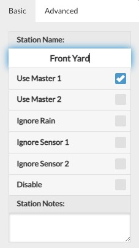
Registerkarte Grundlegendes:
- Stationsname: Ein benutzerdefinierter Name (bis zu 32 Zeichen).
Annotierter Name: Bei aktiviertem Durchflusssensor (siehe Sensor-Einrichtung): Wenn die letzten 5 Zeichen des Namens einen numerischen Wert darstellen, wird eine Durchflusswarnung ausgelöst, wenn die Durchflussrate diesen Wert nach Zonenende überschreitet. Beispiel: Stationsname „Vorgarten 1.357" → Alarm bei Durchflussrate >1,357. - Masters verwenden: Bei Aktivierung werden die zugehörigen Master-Zonen aktiviert, wenn diese Zone läuft.
- Regen/Sensor1/Sensor2 ignorieren: Zone umgeht manuelle Regenverzögerung oder Sensor(en). Standardmäßig deaktiviert.
- Deaktivieren: Zone deaktivieren und ausblenden. Zum Anzeigen: Fußzeilenmenü → „Deaktivierte anzeigen".
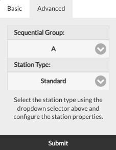
Registerkarte Erweitert:
-
Sequentielle Gruppe: Zone einer Sequentiellen Gruppe (
A-D) oder der Parallelen (P) Gruppe zuweisen. Die Gruppenbezeichnung erscheint neben dem Zonennamen auf der Startseite.- Standardmäßig gehören alle Zonen zur Gruppe A.
- Zonen in derselben sequentiellen Gruppe werden automatisch serialisiert – keine zwei Zonen laufen gleichzeitig.
- Zonen in verschiedenen Gruppen können gleichzeitig laufen.
- Parallele (P) Zonen können neben allen anderen Zonen laufen.
- Das Attribut „Sequentielle Gruppe" ersetzt das alte Pro-Zone-Flag „Sequential" und bietet flexibleren gleichzeitigen Betrieb.
-
Stationstyp (Virtuelle Zone): Spezielle Eigenschaften konfigurieren, sodass eine Station Geräte oder Aktionen über ein Standard-Sprinklerventil hinaus steuern kann. Diese speziellen/virtuellen Stationstypen verbrauchen KEINEN physischen Ausgang – Sie können sie bis zur maximalen Zonenanzahl des Controllers definieren, auch ohne Zonen-Erweiterungen.
- Standard (Standardeinstellung): Normale Sprinklerzone.
- RF: Steuerung von RF-Fernbedienungssteckdosen über einen externen Sender (erfordert RFtoy zum Decodieren der Signale). Ermöglicht das Schalten von Stromleitungsgeräten wie Lampen, Heizungen, Pumpen.
- Fernstation (IP): Löst eine Zone auf einem anderen OpenSprinkler über dessen IP, Port und Zonenindex aus (beide Controller müssen dasselbe Gerätepasswort verwenden).
- Fernstation (OTC): Wie oben, identifiziert den Remote-Controller jedoch über sein OpenThings Cloud Token – ideal für die Verwaltung über verschiedene Netzwerke hinweg. Auch hier: beide Controller müssen dasselbe Passwort verwenden.
- GPIO: Schaltet direkt einen verfügbaren GPIO-Pin am Controller (Active High/Low konfigurierbar). Deaktiviert bei Controllern ohne verfügbare GPIO-Pins.
- HTTP: Sendet eine HTTP-GET-Anfrage bei Zonenaktivität. Konfigurieren Sie
Server(Domainname oder IP),PortundEin/Aus-Befehl (ohne führenden Schrägstrich/). Bei Aktivierung:server:port/ein_befehl, bei Deaktivierung:server:port/aus_befehl. - HTTPS: Wie HTTP, aber über eine sichere Verbindung.
Cloud-synchronisierte Funktionen
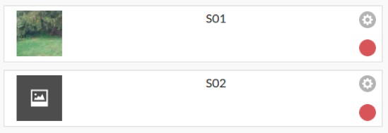
Nach der Anmeldung mit Ihrem OpenSprinkler.com-Konto (über das Seitenleistenmenü) stehen zusätzliche Cloud-synchronisierte Funktionen zur Verfügung:
- Stationsfotos & Notizen: Eigene Bilder und Notizen für jede Zone aufnehmen und zuweisen.
- Standortkonfiguration synchronisieren: Geräteliste und Einstellungen automatisch speichern und geräteübergreifend wiederherstellen – ideal für die Verwaltung mehrerer Controller.
Fußzeilenmenü
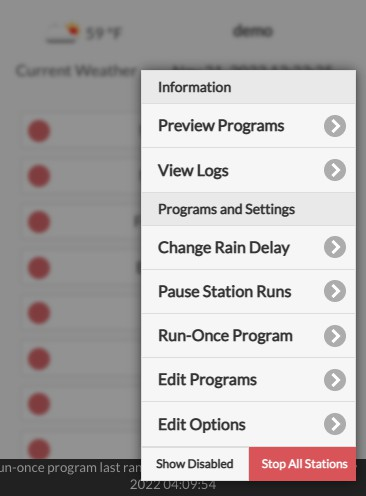
Das Fußzeilenmenü ist auf allen Seiten über das Gittersymbol #️⃣ unten rechts erreichbar und bietet schnellen Zugriff auf häufige Aktionen:- Programme in der Vorschau anzeigen (oder Tastenkombination
Alt+V) - Protokolle anzeigen (
Alt+L) - Regenverzögerung ändern (
Alt+D) - Pause Station-Läufe (
Alt+U) - Einmaliges Programm ausführen (
Alt+R) - Programme bearbeiten (
Alt+P) - Optionen bearbeiten (
Alt+O) - Alle Stationen stoppen
- Deaktivierte anzeigen/ausblenden (auf der Startseite verfügbar):
Sichtbarkeit deaktivierter Zonen umschalten.
Tipp: Auf Laptops/Desktop-Computern können Sie das Menü auch durch Drücken der Taste M öffnen.
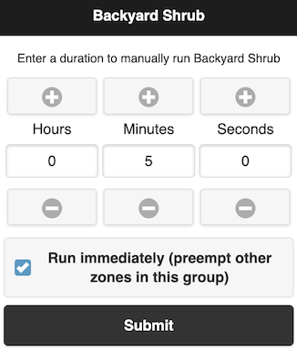
Manuelles Starten / Stoppen einer Zone
Um eine Zone manuell zu starten, klicken Sie auf ihre Zonenkarte und geben eine Laufzeit ein. Wenn eine andere Zone in der gleichen sequentiellen Gruppe läuft, erscheint eine Planungsoption:
- Anhängen: Nach den laufenden Zonen ausführen
- An den Anfang stellen: Sofort ausführen und andere pausieren
- Ersetzen: Sofort ausführen und andere stoppen
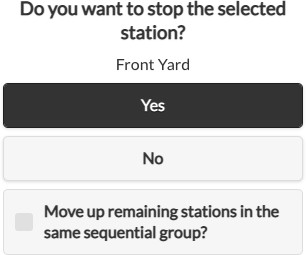
Um eine laufende oder wartende Zone zu stoppen, klicken Sie auf ihre Zonenkarte und bestätigen. Wenn andere Zonen in der gleichen sequentiellen Gruppe warten, erscheint die Option „Verbleibende Zonen nach oben verschieben", damit die nächste Zone sofort startet, anstatt auf den geplanten Zeitpunkt zu warten.Regenverzögerung ändern
Wählen Sie im Fußzeilenmenü Regenverzögerung ändern, um eine benutzerdefinierte Verzögerungszeit (in Stunden) einzugeben. Betroffene Zonen stoppen sofort und bleiben bis zum Ablauf der Verzögerung inaktiv. Zum Abbrechen: Klicken Sie auf die Statusleiste am unteren Rand, oder setzen Sie die Verzögerungszeit auf 0.
Pause Station-Läufe
Diese Funktion hält alle aktiven und wartenden Zonen vorübergehend an:
- Aktive Zonen stoppen sofort und setzen automatisch fort, wenn der Pausentimer 0 erreicht.
- Startzeiten wartender Zonen werden entsprechend angepasst.
- Programme, deren Startzeit in den Pausenzeitraum fällt, werden in die Warteschlange gestellt.
- Während der Pause zeigt die Fußzeile den Pausenstatus an.
Um eine aktive Pause zu ändern oder abzubrechen:
- Klicken Sie auf die Statusleiste in der Fußzeile, oder
- Fußzeilenmenü → Pause ändern.
Alle Zonen stoppen
Alle Zonen sofort beenden und die Laufwarteschlange löschen.
Optionen bearbeiten
Klicken Sie auf Fußzeilenmenü → Optionen bearbeiten (oder Alt+O), um die Einstellungen zu konfigurieren:
Systemeinstellungen
- Standort: Tippen Sie auf Standort, um eine Karte zu öffnen und Ihre Adresse zu suchen; oder klicken Sie auf das Stiftsymbol ✏️, um GPS-Koordinaten manuell einzugeben.
- PWS-Standort: Bei Verwendung von WUnderground (WU) als Wetterdatenanbieter muss ein Personal Weather Station (PWS)-Standort ausgewählt werden.
- Geben Sie zunächst einen gültigen WU-API-Schlüssel auf der Registerkarte Wetter und Sensoren ein und senden Sie ihn ab.
- Kehren Sie zur Standorteinstellung zurück – verfügbare PWS-Standorte erscheinen als blaue Punkte auf der Karte.
- Klicken Sie auf einen der blauen Punkte als Ihren PWS-Standort.
- PWS-Standort: Bei Verwendung von WUnderground (WU) als Wetterdatenanbieter muss ein Personal Weather Station (PWS)-Standort ausgewählt werden.
- Zeitzone: Zeitzone und Sommerzeit werden automatisch anhand Ihres Standorts erkannt (über Wetterabfragen; erfordert Internet), daher ist die Dropdown-Liste standardmäßig ausgegraut.
- Zum manuellen Überschreiben löschen Sie das Standort-Feld (Kreuzsymbol ✖️) – dann wird die Zeitzone editierbar.
- Protokollierung aktivieren: Speichert Protokolldaten im internen Flash-Speicher (standardmäßig aktiviert).
App-Einstellungen
Diese Einstellungen werden lokal in der App/Benutzeroberfläche gespeichert und haben keinen Einfluss auf den Controller.
- Metrisch / 24-Stunden-Zeit verwenden: Bevorzugtes Einheitensystem (imperial oder metrisch) und Zeitformat (12-Std. oder 24-Std.) wählen. Automatische Erkennung ist Standard.
- Stationen nach Gruppen / Namen sortieren: Zonen auf der Startseite nach sequentiellen Gruppen und/oder Namen sortieren (statt nur nach Zonenindex).
- Deaktivierte anzeigen: Sichtbarkeit deaktivierter Stationen und Programme umschalten.
- Stationsnummer anzeigen: Numerischen Index neben dem Zonennamen anzeigen.
Master konfigurieren
Diese Firmware unterstützt bis zu zwei unabhängige Master-Stationen mit jeweils anpassbaren Einstellungen:
- Masterstation: Wählen Sie eine Zone als Master (Pumpenrelais). Jede Zone kann festgelegt werden. Eine Masterzone wird zusammen mit anderen Zonen aktiviert.
- Master-Ein-Einstellung: Feinabstimmung, wann der Master einschaltet (
−600bis+600Sekunden, in 5-Sekunden-Schritten). Beispiele:+15→ Master schaltet15Sekunden nach Start einer zugehörigen Zone ein.-60→ Master schaltet60Sekunden vor Zonenstart ein.
- Master-Aus-Einstellung: Wie oben, aber für die Master-Ausschaltzeit.
Umgang mit Stationen
- Anzahl der Stationen: OpenSprinkler erkennt automatisch die verfügbaren Zonen (inkl. Expander), aber die Anzahl muss manuell konfiguriert werden – sie darf die physischen Zonen überschreiten, um Virtuelle Zonen einzuschließen (siehe Stationstypen). Standard:
8Zonen. - Stationsverzögerung: Zeitlücke zwischen aufeinanderfolgenden Zonen (
−600bis+600s, in 5-Sekunden-Schritten). Standard:0(keine Verzögerung). Beispiele:+60→ Nächste Zone startet1Minute nach der vorherigen.-15→ Nächste Zone startet15Sekunden vor Ende der vorherigen (Überlappung um15Sekunden). Nützlich bei Wasserdrosselungsproblemen.
Wetter und Sensoren
- Anpassungsmethode: Wählen Sie eine wetterbasierte Anpassungsmethode.
- Manuell (Standard): %-Bewässerung manuell einstellen.
- Andere Methoden berechnen Anpassungen automatisch. Ausführliche Erläuterungen finden Sie auf OpenSprinkler Support.
- Optionen der Anpassungsmethode: Parameter für die gewählte Methode konfigurieren.
- Intervallprogramme anhand von Mehrtagesdurchschnitt anpassen: Verfügbar für Zimmerman oder ETo. Ermöglicht es Intervallprogrammen, den durchschnittlichen Bewässerungswert über das gesamte Programmintervall zu verwenden statt nur den des Vortags. Beispiel: Ein 4-Tage-Intervallprogramm nutzt den 4-Tage-Durchschnitt.
- Gilt nur bei aktivierter Wetteranpassung für das Programm.
- Begrenzt durch historische Daten des Anbieters (z. B. Apple =
10Tage). - Die Mehrtagesdurchschnitte werden in der Systemdiagnose angezeigt.
-
Wetterbeschränkungen: Verfügbar für alle Anpassungsmethoden (einschließlich Manuell):
- Regen: Bewässerung überspringen, wenn die Gesamtregenvorhersage eine festgelegte Menge über eine Anzahl von Tagen überschreitet (z. B.
0,5 Zollin den nächsten3Tagen). Wert0deaktiviert die Regel. - Temperatur: Bewässerung überspringen, wenn die aktuelle Temperatur unter einen Wert fällt (z. B.
10°C). Wert-40deaktiviert die Regel. - Kalifornien-Regel: Ältere Regel – überspringt Bewässerung bei
>0,1"Niederschlag in den letzten48Stunden. - Aktive Wetterbeschränkungen werden auf der Startseite und in der Systemdiagnose angezeigt.
- Regen: Bewässerung überspringen, wenn die Gesamtregenvorhersage eine festgelegte Menge über eine Anzahl von Tagen überschreitet (z. B.
-
Wetterdatenanbieter: Bevorzugten Anbieter wählen. Standard: Apple.
- Bei Bedarf eines API-Schlüssels erscheint ein Eingabefeld.
- Einige Anbieter haben Einschränkungen (z. B. DWD = nur Deutschland; WU erfordert PWS-Standort).
- %-Bewässerung: Globaler Skalierungsfaktor für Bewässerungszeiten. Standard:
100%.- Nur bei Manueller Anpassungsmethode editierbar.
- Beispiel:
75%→ Alle Bewässerungszeiten werden mit 0,75 multipliziert. - Gilt nur für Programme mit aktivierter Wetteranpassung.
Sensor-Einrichtung
OpenSprinkler unterstützt zwei unabhängige Sensoren (SN1, SN2) mit konfigurierbaren Typen: Regen, Boden (nur binäre Ausgabe), Programmschalter und Durchfluss (derzeit nur auf SN1 unterstützt).
-
Anschlüsse:
- Die Signalkabel des Sensors an SN1 + GND (oder SN2 + GND) anschließen.
- Schließen Sie KEINE Signalkabel an COM an – dies kann den Controller beschädigen.
- Bei +5V-Versorgung (z. B. bestimmte Durchflusssensoren): Verwenden Sie den +5V (VIN)-Anschluss.
- Bei 24VAC-Versorgung (z. B. Funksensoren): Stromkabel an COM und GND anschließen (nur AC-Modell; DC/Latch-Modelle können kein 24VAC liefern).
- Für OpenSprinkler v3.4:
SN3,SN4sind für zukünftige Verwendung reserviert und derzeit nicht aktiviert.
-
Regen-/Bodensensor: Stoppt Zonenbetrieb automatisch bei Regen oder hoher Bodenfeuchtigkeit.
- Wählen Sie Normalerweise offen oder Normalerweise geschlossen (häufigster Typ).
- Unterstützt nur Sensoren mit binären EIN/AUS-Signalen (Trockenkontaktschalter).
- Für Analogsensoren: Verwenden Sie einen Analog-Digital-Adapter, der ein analoges Signal mit einstellbarem Schwellenwert in EIN/AUS umwandelt.
- Verzögertes Einschalten: Sensor muss Mindestdauer aktiv sein, bevor Auslösung (verhindert Fehlauslösungen).
- Verzögertes Ausschalten: Haltezeit nach Sensor-Deaktivierung (verlängert Sensoraktivierung). Beispiele:
10 Minuten Verzögertes Einschalten → Sensor gilt erst als ausgelöst, nachdem er 10 Minuten aktiv war.
30 Minuten Verzögertes Ausschalten → Sensor gilt erst als deaktiviert, nachdem er 30 Minuten inaktiv war.
- Programmschalter: Ein Trockenkontaktschalter/-taster kann ein Programm starten.
SN1: StartetProgramm 1SN2: StartetProgramm 2- Wird aktiviert, wenn der Schalter länger als 1 Sekunde gedrückt wird.
- Durchflusssensor: Erkennt Durchflussimpulse zur Messung der Echtzeit-Durchflussrate und protokolliert das Gesamtdurchflussvolumen am Ende jeder Station und jedes Programmzyklus.
- Unterstützt alle 2-Draht-Durchflusssensoren mit Trockenkontakt (empfohlen).
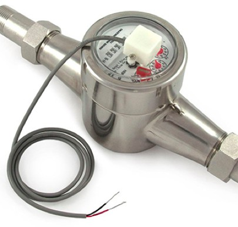
- Beide Drähte an SN1 + GND anschließen.
- Reedschalter, die sich bei Wasserfluss wiederholt öffnen/schließen. Benötigen keine Versorgung, keine Polarität.
- Unterstützt auch 3-Draht-Sensoren mit +5V:
- Verdrahtung:
GND(schwarz) anGND,5V(rot) an+5V(VIN),Daten(gelb) anSN1.
- Verdrahtung:
- Durchflussimpulsrate: Im Datenblatt des Sensors zu finden.
- Zur Umrechnung von Impulszahl in Wasservolumen.
- Genauigkeit auf 2 Dezimalstellen begrenzt (zusätzliche Stellen werden verworfen).
- Bei höherer Genauigkeit: Rate um Faktor
10skalieren. - Empfehlung:
L/Impulsals Einheit beibehalten (auch wenn das Datenblatt Gallonen/Impuls angibt) – die Einheit dient nur der Anzeige.
- Die Signalfrequenz sollte 50 Hz nicht überschreiten, da höhere Frequenzen zu Ungenauigkeiten führen können.
- Unterstützt alle 2-Draht-Durchflusssensoren mit Trockenkontakt (empfohlen).
Integrationen
- OTC: Konfigurieren Sie den OpenThings Cloud (OTC)-Token für Fernzugriff. Siehe OTC-Supportartikel.
- MQTT: Konfigurieren Sie MQTT-Parameter. Siehe MQTT-Supportartikel.
- E-Mail-Benachrichtigungen: Konfigurieren Sie E-Mail-Einstellungen. Siehe E-Mail-Supportartikel.
- IFTTT: Konfigurieren Sie den IFTTT-Webhooks-Schlüssel. Siehe IFTTT-Supportartikel.
-
Benachrichtigungsereignisse: Konfigurieren Sie Ereignisse, die Benachrichtigungen auslösen. Siehe den separaten Abschnitt Benachrichtigungs-Ereignisse (Notification Events).
Nicht zu viele Ereignisse aktivieren
Die Aktivierung zu vieler Ereignisse oder Benachrichtigungsmethoden kann zu erheblichen Verzögerungen, fehlenden Antworten oder sogar übersprungenen kurzen Bewässerungszyklen führen.
-
Gerätename: Ein benutzerdefinierter Name für diesen Controller, der auf der Startseite und in Benachrichtigungen angezeigt wird, um den Controller zu identifizieren.
LCD-Bildschirm
- Helligkeit im Leerlauf: LCD-Helligkeit einstellen, wenn der Controller inaktiv ist.
- Verringern verlängert die LCD-Lebensdauer.
- Der Wert
0schaltet das LCD bei Inaktivität vollständig aus. - Durch Drücken einer beliebigen Taste wird das LCD wieder aktiviert.
Erweiterte Einstellungen
- HTTP-Port: HTTP-Port des Geräts ändern. Standard:
80. - Unterstromschwelle: Löst eine Unterstrom-Benachrichtigung aus, wenn der Stromverbrauch einer Zone (
mA) am Ende ihres Betriebs unter diesen Wert fällt (z. B. gebrochener Draht oder defektes Magnetventil). Standard:100 mA.- Empfohlener Wert: die Hälfte des typischen Haltestroms Ihres Magnetventils.
- Wert
0deaktiviert diese Erkennung.
- Überstromgrenze: Löst Überstrom-Alarm aus, wenn der Stromverbrauch (
mA) jederzeit diesen Wert überschreitet (z. B. kurzgeschlossene Magnetventile, fehlerhafte Verkabelung, zu viele gleichzeitige Zonen).- Bei Erkennung beim Zonenstart: betroffene Zone wird sofort abgeschaltet.
- Bei Erkennung im laufenden Betrieb (Systemüberstrom): alle aktiven Zonen werden abgeschaltet.
- Der Alarm erscheint auf LCD, in der UI/App und wird an alle aktivierten Benachrichtigungskanäle gesendet.
- Nach Auslösung kann der Controller weiterhin Programme ausführen (solange kein erneuter Überstrom), aber der Alarm bleibt aktiv, bis er durch Klick auf die Statuszeile zurückgesetzt oder der Controller neu gestartet wird.
- Wert
0verwendet den Systemstandard. - Wert
2550(max.) deaktiviert die Funktion (NICHT empfohlen – der Controller ist dann Überstromschäden ausgesetzt). - Zur Diagnose: Magnetventil-Widerstandstest durchführen.
- Diese Funktion ist nur bei AC/DC-betriebenen OpenSprinkler v2.3 & v3.x verfügbar (OSPi ohne Strommessfunktion).
- Boost-Zeit (nur DC/Latch-Modelle): Spannungsanhebungsdauer (
0-1000 ms). Standard:320 ms.- Erhöhen bei Verwendung eines schwachen/niederstromigen DC-Adapters.
- Soll-PD-Spannung (nur DC v3.4): Gewünschte USB-C PD (Power Delivery) Spannung einstellen.
- Wert
0verwendet den Systemstandard. - Der ideale Wert ist der Haltestrom des Magnetventils multipliziert mit seinem Spulenwiderstand (z. B.
0,25 A × 30 Ω = 7,5 V). Der Haltestrom steht im Datenblatt; der Spulenwiderstand kann mit einem Multimeter gemessen werden. - Diese Option wird nur angezeigt, wenn das Netzteil PD, PPS oder AVS unterstützt.
- Die Tatsächliche Spannung (unter dem Optionsnamen angezeigt) ist die nächstmögliche unterstützte Spannung Ihres Adapters.
- Wert
- Latch Ein-/Aus-Spannung (nur Latch-Modell): Boost-Spannungen zum Aktivieren und Deaktivieren von Verriegelungs-Magnetventilen anpassen. Maximum:
24V. - NTP-IP-Adresse: Benutzerdefinierter NTP-Server für Zeitsynchronisation. Wert
0.0.0.0verwendet den Systemstandard. - Passwort ignorieren: Bei Aktivierung wird jedes Gerätepasswort akzeptiert (Passwort umgehen).
- Automatische Aktualisierung spezieller Stationen: Sendet periodisch Befehle an virtuelle Stationen (RF/Remote/HTTP), um sie mit dem Hauptcontroller zu synchronisieren.
- NTP-Synchronisierung: Automatische Zeitsynchronisation basierend auf Ihrem Standort.
- Zur manuellen Zeitanpassung diese Option deaktivieren – dann wird die Gerätezeit editierbar.
- DHCP verwenden: IP-Adresse automatisch vom Router beziehen.
- Empfehlung: Aktiviert lassen.
- Bei gewünschter fester IP: DHCP-Reservierung (IP-zu-MAC-Bindung) des Routers verwenden. DHCP nur deaktivieren, wenn der Router keine DHCP-Reservierung unterstützt.
- Bei Deaktivierung MÜSSEN Statische IP, Gateway, Subnetz und DNS korrekt eingegeben werden.
Zurücksetzen
- Protokolldaten löschen: Alle gespeicherten Protokolle löschen.
- Alle Optionen zurücksetzen: Alle Optionen auf Werkseinstellungen zurücksetzen.
- Alle Programme löschen: Alle Programme löschen.
- Stationsattribute zurücksetzen: Alle Stationseinstellungen auf Werksstandards zurücksetzen.
- WLAN zurücksetzen (nur v3): Auf WLAN-AP-Modus zurücksetzen zur Neukonfiguration.
Benachrichtigungs-Ereignisse (Notification Events)
OpenSprinkler unterstützt insgesamt 17 konfigurierbare Benachrichtigungsereignisse, die über die Integrationskanäle MQTT, E-Mail und IFTTT gesendet werden können. Die Konfiguration erfolgt unter Optionen bearbeiten → Integrationen → Benachrichtigungsereignisse (im UI: „Ereignisse konfigurieren").
Nutzungshinweis
Die Aktivierung zu vieler Ereignisse oder Benachrichtigungsmethoden kann zu erheblichen Verzögerungen, fehlenden Antworten oder sogar übersprungenen kurzen Bewässerungszyklen führen.
Übersicht aller Ereignisse
| Nr. | Ereignis | Firmware-Konstante | UI-Schlüssel | Beschreibung |
|---|---|---|---|---|
| 0 | Programmstart | NOTIFY_PROGRAM_SCHED (0x0001) |
program |
Benachrichtigung bei Beginn eines geplanten Programms. |
| 1 | Aktualisierung von Sensor 1 | NOTIFY_SENSOR1 (0x0002) |
sensor1 |
Statusänderung von Sensor 1 (Regen/Boden/Programm). |
| 2 | Durchflusssensor aktualisieren | NOTIFY_FLOWSENSOR (0x0004) |
flow |
Aktualisierung der Durchflussmesswerte. |
| 3 | Wetterdienst aktualisieren | NOTIFY_WEATHER_UPDATE (0x0008) |
weather |
Anpassung der Bewässerungsrate durch den Wetterdienst. |
| 4 | Controller Neustart | NOTIFY_REBOOT (0x0010) |
reboot |
Benachrichtigung, wenn der Controller neu gestartet wird. |
| 5 | Bewässerungskreis beendet | NOTIFY_STATION_OFF (0x0020) |
run |
Eine Station hat ihren Lauf beendet. Enthält Laufzeit und ggf. Durchflussvolumen. |
| 6 | Aktualisierung von Sensor 2 | NOTIFY_SENSOR2 (0x0040) |
sensor2 |
Statusänderung von Sensor 2. |
| 7 | Aktualisierung der Regenverzögerung | NOTIFY_RAINDELAY (0x0080) |
rain |
Regenverzögerung wurde aktiviert, geändert oder deaktiviert. |
| 8 | Start Bewässerungskreis | NOTIFY_STATION_ON (0x0100) |
station |
Eine Station wurde eingeschaltet. |
| 9 | Strömungswarnung | NOTIFY_FLOW_ALERT (0x0200) |
flow_alert |
Durchfluss überschreitet den im Stationsnamen definierten Schwellenwert. |
| 10 | Unter-/Überstrom-Fehler | NOTIFY_CURR_ALERT (0x0400) |
curr_alert |
Unterstrom oder Überstrom erkannt – möglicher Hardware-Fehler. |
| 11 | Monatlicher Wasserverbrauch | NOTIFY_MONTHLY_REPORT (0x0800) |
monthly_report |
Monatliche Zusammenfassung des Wasserverbrauchs. |
| 12 | Kein Durchfluss Alarm | NOTIFY_NOFLOW (0x1000) |
noflow |
Kein Durchfluss erkannt trotz aktiver Zone – mögliche Verstopfung oder Pumpenausfall. |
| 13 | Rohrbruch Alarm | NOTIFY_PIPE_BURST (0x2000) |
pipe_burst |
Anomal hoher Durchfluss erkannt – möglicher Rohrbruch. |
| 14 | Überwachung Warnstufe niedrig | NOTIFY_MONITOR_LOW (0x4000) |
warning_low |
Monitoring-Sensor meldet niedrige Warnstufe. |
| 15 | Überwachung Warnstufe mittel | NOTIFY_MONITOR_MID (0x8000) |
warning_med |
Monitoring-Sensor meldet mittlere Warnstufe. |
| 16 | Überwachung Warnstufe hoch | NOTIFY_MONITOR_HIGH (0x10000) |
warning_high |
Monitoring-Sensor meldet hohe Warnstufe. |
Technische Details
Die Benachrichtigungsereignisse werden als Bitmasken in den Controller-Optionen gespeichert:
- Option
o49(ife): Bits 0-7 (Ereignisse 0-7) - Option
ife2: Bits 8-15 (Ereignisse 8-15) - Option
ife3: Bits 16+ (Ereignisse 16+)
Jedes Bit in der Maske repräsentiert ein Ereignis. Ist das Bit gesetzt, wird die Benachrichtigung für dieses Ereignis aktiviert.
Benachrichtigungskanäle
Alle Ereignisse werden über die konfigurierten Integrationskanäle gesendet:
| Kanal | Konfiguration | Beschreibung |
|---|---|---|
| MQTT | Server, Port, Benutzer, Passwort | Nachrichten an ein MQTT-Topic senden. Ideal für Heimautomatisierung (z. B. Home Assistant, Node-RED). |
| SMTP-Server, Absender, Empfänger | E-Mail-Benachrichtigungen bei ausgelösten Ereignissen. | |
| IFTTT | Webhooks-Schlüssel | Integration mit IFTTT-Applets für benutzerdefinierte Automatisierungen. |
| InfluxDB | Server-URL, Token, Bucket | Messdaten an eine InfluxDB-Instanz senden (z. B. für Grafana-Dashboards). |
Empfohlene Konfiguration
- Für die meisten Benutzer: Aktivieren Sie nur die wichtigsten Ereignisse wie Überstrom-Fehler (
curr_alert), Rohrbruch Alarm (pipe_burst) und Controller Neustart (reboot). - Für fortgeschrittene Überwachung: Zusätzlich Bewässerungskreis beendet (
run), Durchflusssensor (flow) und Monatlicher Wasserverbrauch (monthly_report). - Vermeiden Sie die gleichzeitige Aktivierung aller Ereignisse, insbesondere Start Bewässerungskreis (
station) bei kurzen Laufzeiten, da dies zu Nachrichtenflut führen kann.
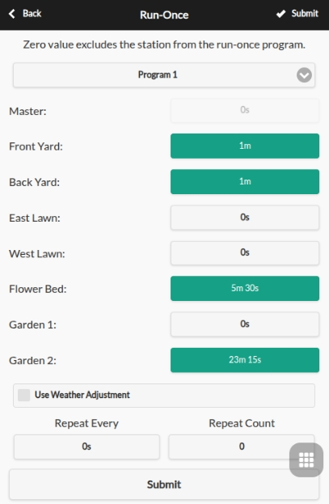
Einmaliges Programm ausführen
Wählen Sie im Fußzeilenmenü → Einmaliges Programm ausführen (Alt+R), um manuell ein einmaliges Programm zu starten. Hier können Sie voreingestellte Bewässerungszeiten aus einem bestehenden Programm laden, ein Schnell-Testprogramm starten oder die Bewässerungszeit für jede Station manuell anpassen.
- Alle relevanten Zonenattribute werden angewendet (z. B. Master verwenden, Sequentielle Gruppe, Stationsverzögerung, Master Ein-/Aus-Einstellung).
- Wählen Sie, ob die aktuelle %-Bewässerung angewendet werden soll.
- Bei Einstellung auf Wiederholung erstellt das System automatisch ein Einzelprogramm.
- Wenn bereits Zonen laufen, erscheint eine Planungsoption:
- Anhängen: Nach bestehenden Zonen ausführen
- An den Anfang stellen: Sofort ausführen und andere pausieren
- Ersetzen: Sofort ausführen und andere abbrechen
Tipp 1 – Programm über Controller-Tasten starten
Um ein Programm ohne WLAN zu starten: Halten Sie B3 gedrückt, bis „Run a Program" erscheint, navigieren Sie mit B3 durch die verfügbaren Programme und halten Sie B3 gedrückt, um es zu starten.
Tipp 2 – Manuelles Programm erstellen
Ein Programm, das nicht automatisch läuft, aber für einmalige Ausführung und Tastenaktivierung verfügbar bleibt: Erstellen Sie ein neues Programm und setzen Sie es als Deaktiviert.
Programme
OpenSprinkler unterstützt bis zu 40 Programme. Über Fußzeilenmenü → Programme bearbeiten (Alt+P) gelangen Sie zur Programmliste. Von hier aus können Sie: Hinzufügen, Ändern, Kopieren, Löschen, Manuell Ausführen oder Neu Ordnen (mit dem Pfeil-Symbol ⬆️).
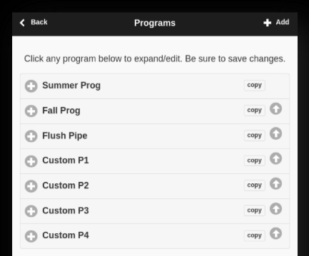
Programmdaten
Klicken Sie auf Hinzufügen ➕ oben rechts, um ein neues Programm zu erstellen. Jedes Programm enthält:
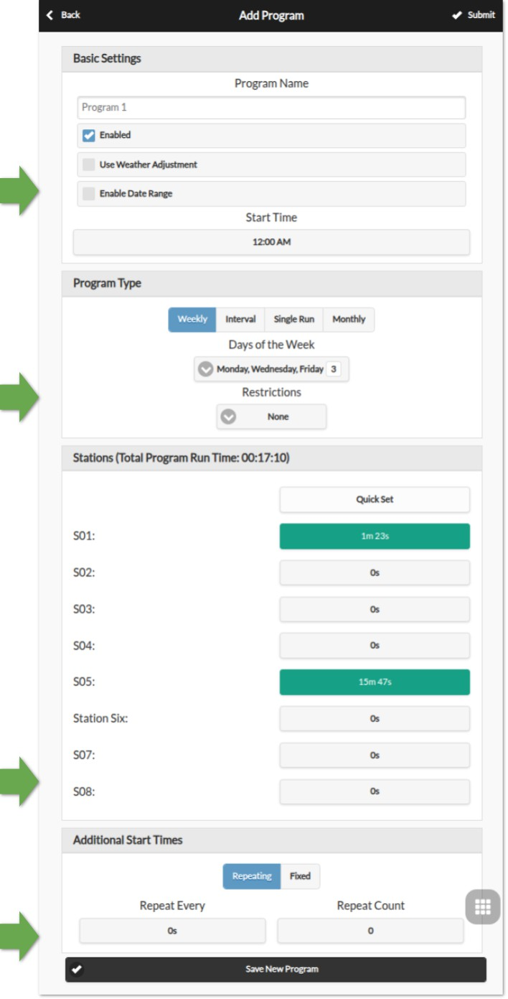
Grundeinstellungen:
- Programmname: Bis zu 32 Zeichen. (Siehe Programmname-Anmerkungen für unterstützte Suffixe).
- Aktiviert: Programm aktivieren/deaktivieren.
- Wetteranpassung verwenden: Wetterbasierte Anpassungen anwenden, einschließlich aktuelle %-Bewässerung, Wetterbeschränkungen und Mehrtagesdurchschnitt (nur für Intervallprogramme).
- Datumsbereich aktivieren: Programmbetrieb auf einen Datumsbereich beschränken. Beispiele:
15.05-15.09: 15. Mai bis 15. September.10.11-20.02: 10. November bis 20. Februar (des folgenden Jahres).
- Startzeit: Die erste Startzeit (z. B.
8:15). Unterstützt auch Sonnenaufgang oder Sonnenuntergang mit optionalem Offset.
Programmtyp:
- Wöchentlich: Ausführung an ausgewählten Wochentagen.
- Intervall: Ausführung alle
NTage (1-128).- Beginn in: Offset relativ zu heute:
0= heute,1= morgen, bisN-1. - Mehrtagesdurchschnitt gilt für diesen Typ.
- Beginn in: Offset relativ zu heute:
- Einmalig: Ein einmaliges Programm, das sich nach Abschluss automatisch löscht.
- Monatlich: Ausführung an einem bestimmten Tag jedes Monats:
1= 1. Tag,0= letzter Tag. - Einschränkungen:
- Ungerade Tage: Nur an ungeraden Tagen (überspringt den 31. und 29. Februar).
- Gerade Tage: Nur an geraden Tagen.
Bewässerungszeiten pro Station: Laufzeit pro Station einstellen, von 1 Sekunde bis 64800 Sekunden (18 Stunden).
Unterstützt auch Sonnenaufgang-bis-Sonnenuntergang oder Sonnenuntergang-bis-Sonnenaufgang als Laufzeit.
Zusätzliche Startzeiten: Zwei Optionen:
- Fest: Bis zu 3 zusätzliche Zyklen zu beliebigen Tageszeiten.
- Wiederholung: In regelmäßigen Abständen wiederholen (z. B. alle 45 Minuten für 8 Zyklen).
Nützlich zur Aufteilung langer Bewässerungszeiten in kürzere Zyklen (Zyklus und Einweichen).
Wiederholte Startzeiten können sich auch über Nacht auf den nächsten Tag erstrecken.
Programmname-Anmerkungen
Programmnamen können Anmerkungen enthalten, um die Stationsreihenfolge anzupassen oder spezielle Aktionen auszulösen.
Anmerkung zur Stationsreihenfolge Standardmäßig führt ein Programm Stationen aufsteigend nach Index aus. Um dies zu ändern, fügen Sie dem Programmnamen ein > gefolgt von einem der folgenden Buchstaben hinzu:
I: Absteigend nach Stationsindexn: Aufsteigend nach StationsnameN: Absteigend nach Stationsnamer: Zufällige Reihenfolgea: Abwechselnd aufsteigend/absteigend nach IndexA: Abwechselnd absteigend/aufsteigend nach Indext: Abwechselnd aufsteigend/absteigend nach NameT: Abwechselnd absteigend/aufsteigend nach Name
Beispiel: „Sommergarten >t" führt Stationen beim ersten Mal aufsteigend nach Name aus, beim nächsten Mal absteigend, und wechselt danach ab.
Die Programmvorschau berücksichtigt alle Anmerkungen zur einfachen Überprüfung. Manuell gestartete Programme berücksichtigen diese ebenfalls.
Neustart-Anmerkung: Spezielle Programmnamen für automatische Neustarts in regelmäßigen Abständen:
:>reboot: Neustart, wenn der Controller im Leerlauf ist (keine Zonen laufen).:>reboot_now: Sofortiger Neustart, unabhängig von Zonenaktivität.
Beide Aktionen werden um eine Minute gegenüber der geplanten Startzeit verzögert, um sofortige Neuauslösung nach dem Reboot zu verhindern. Mindestens eine Zone mit Laufzeit muss beim Erstellen angegeben werden, es werden aber keine Zonen tatsächlich aktiviert. Beispiel: Programm :>reboot, täglich um 2:00 Uhr → täglicher automatischer Neustart.
Programmvorschau
Über Menü → Programme in der Vorschau anzeigen können Sie alle Programme visualisieren.
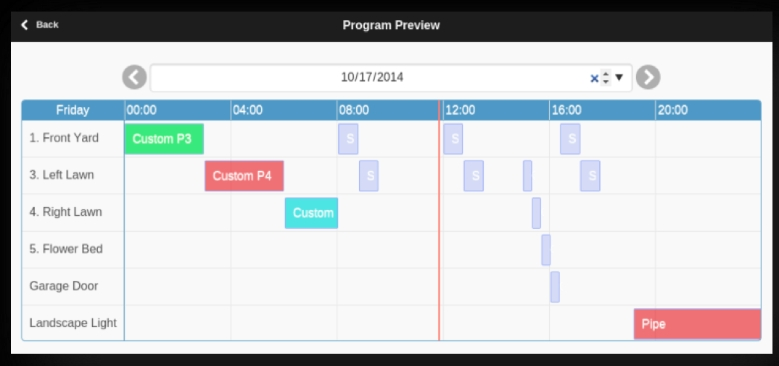
- Heutiger Zeitplan wird standardmäßig angezeigt; mit den Pfeilen ⬅️ / ➡️ andere Tage durchblättern.
- Aktuelle Uhrzeit wird als rosa vertikale Linie dargestellt. Sie können die Ansicht zoomen oder verschieben.
- Farbige Balken zeigen Laufzeit und Programmname jeder Station; Klick auf einen Balken öffnet den Programm-Editor.
Simulationsgenauigkeit: Die Vorschau nutzt eine Simulation des gleichen Planungsalgorithmus wie die Controller-Firmware und berücksichtigt Master-Zonen, Stationsverzögerung, Master Ein-/Aus-Einstellungen und Sequentielle Gruppen.
Wetter und dynamische Ereignisse:
- Regenverzögerung und Sensoren werden ignoriert (basieren auf Echtzeitbedingungen).
- Programme mit Wetteranpassung skalieren nach dem aktuellen %-Bewässerungswert:
- Manuell: Gleicher Prozentsatz für alle Vorschau-Tage.
- Zimmerman/ETo: Aktueller Wert nur für heute; alle anderen Tage nehmen 100% an.
- Wetterbeschränkungen und Mehrtagesdurchschnitte gelten nur für den heutigen Zeitplan.
- Bei %-Bewässerung < 20% werden Stationen mit einer berechneten Laufzeit unter 10 Sekunden übersprungen.
Sequentielle Gruppe der Zone
OpenSprinkler unterstützt sowohl sequentiellen (nacheinander) als auch parallelen (gleichzeitig) Zonenbetrieb, gesteuert durch das Sequentielle Gruppe-Attribut jeder Zone.
-
Zonen in der gleichen Sequentiellen Gruppe laufen nacheinander. Wenn eine Zone planmäßig starten soll, während eine andere derselben Gruppe bereits läuft, wird sie automatisch in die Warteschlange gestellt. Dies ist die gängige Methode in den meisten Sprinkler-Controllern, um den Wasserdruck aufrechtzuerhalten.
-
Zonen in verschiedenen Sequentiellen Gruppen können gleichzeitig laufen. Beispiel: Zonen 1–3 in Gruppe
A, Zonen 4–6 in GruppeB→ paralleler Betrieb möglich. -
Parallelgruppe: Läuft unabhängig von allen anderen Zonen – nützlich für Lampen, Pumpen, Heizungen oder andere Nicht-Sprinkler-Geräte.
HINWEIS: Frühere Firmwares verwendeten ein einzelnes Sequential-Flag für alle Zonen (eine einzige sequentielle Gruppe). Dieses Flag wurde durch das Multi-Gruppen-System ersetzt, das mehr Flexibilität bietet.
Protokollierung
OpenSprinkler unterstützt die Protokollierung von Zonenaktivitäten, Regenverzögerungen, Sensor-Ereignissen, Durchflussmengen und %-Bewässerungsänderungen im internen Flash-Speicher.
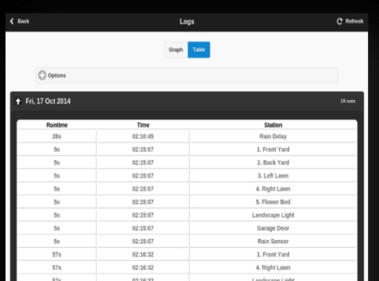
- Über Fußzeilenmenü → Protokolle anzeigen (
Alt+L) wird eine grafische Darstellung angezeigt. - Auf der Registerkarte Optionen können Sie Start- und Enddatum wählen (Standard: letzte 7 Tage).
Bei großen Datensätzen den Bereich auf einen einzelnen Tag einschränken. - Klicken Sie oben auf Tabelle, um zur tabellarischen Ansicht zu wechseln.
Weitere Informationen zum Protokolldatenformat und Beispielskripte zum Exportieren (z. B. als Tabellenkalkulation) finden Sie in der OpenSprinkler-API-Dokumentation.
Firmware-Update
OpenSprinklerPro Online-OTA
OpenSprinklerPro nutzt Seitenmenü → Online-Update. Der Dialog prüft das Update-Manifest, erstellt ein Backup, wählt die passende Firmwarevariante und zeigt den Update-Fortschritt. Dies ist der empfohlene Update-Weg für OpenSprinklerPro und ESP32-C5-Builds.
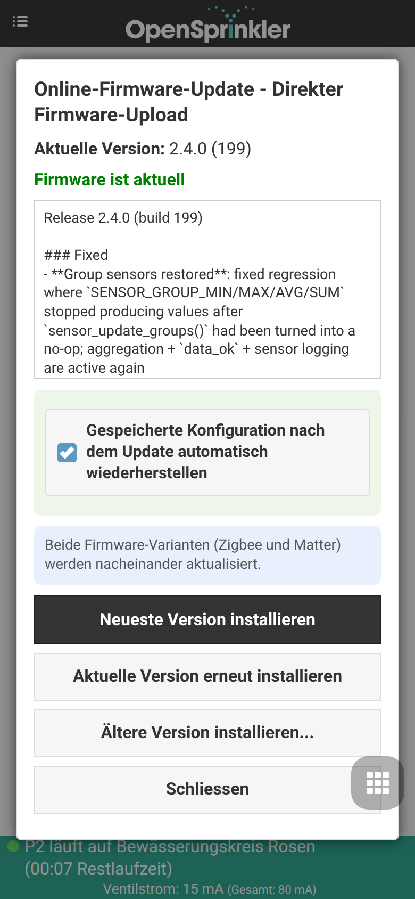
Details zu Backup, Firmwarevarianten und Plattformverfügbarkeit: OpenSprinklerPro Online-OTA.
OpenSprinkler v3.x
Klassische OpenSprinkler-v3.x-Firmware wird über die eingebaute Upload-Seite aktualisiert:
- Zuerst die Konfiguration über das Seitenmenü exportieren.
- Die passende
.bin-Firmwaredatei herunterladen. http://<controller-ip>/updateöffnen.- Firmwaredatei auswählen, Gerätepasswort eingeben und absenden.
- Warten, bis der Controller neu gestartet ist.
Im WiFi-AP-Modus mit dem Controller-AP verbinden und http://192.168.4.1/update öffnen.
OpenSprinkler v2.3
OpenSprinkler v2.3 benötigt für Firmware-Updates ein USB-Kabel. Folgen Sie den alten v2.3-Firmware-Update-Anleitungen.
OpenSprinkler Pi (OSPi)
OSPi wird direkt auf dem Raspberry Pi über Shell/Git/Build-Skripte aktualisiert, nicht über den Web-OTA-Dialog der Firmware. Folgen Sie den OSPi-Firmware-Update-Anleitungen.
Links und Ressourcen
Technische Daten
| OpenSprinkler v3 | OpenSprinkler Pi (OSPi) | |
|---|---|---|
| Eingangsspannung: | AC-Modell: 22-28V AC DC/Latch: 6V-24V DC |
22-28V AC |
| Leistungsaufnahme: | 0,5-0,9 W | 0,5 W + RPi-Leistungsaufnahme |
| Anzahl Zonen: | Hauptcontroller: 8; Erweiterbar auf 72 |
Hauptcontroller: 8; Erweiterbar auf 200 |
| Magnetventil-Treiber: | AC: 1 A/Zone (Triac) DC: 2 A/Zone (MOSFET) Latch: 6A Spitze/Zone |
1 A/Zone (Triac) |
| Abmessungen: | v3.0-3.3: 140×56×33 mm v3.4: 125×79×25 mm |
135×105×38 mm |
| Gewicht: | 140 g (5 oz) | 200 g (7 oz) |
| Expander: | 130×75×25 mm / 100 g (4 oz) | 130×75×25 mm / 100 g (4 oz) |
Erweiterte Themen
Installation eines RF-Senders (Radiofrequenz)
OpenSprinkler unterstützt Standard-RF-Sender mit 434 MHz und 315 MHz, die die Steuerung von Fernsteckdosen für Stromleitungsgeräte wie Lampen, Heizungen, Ventilatoren und Pumpen ermöglichen. Zur Nutzung:
- Verwenden Sie ein RFToy, um die Signale Ihrer Fernsteckdosen zu decodieren.
- Jeder RF-Code ist eine hexadezimale Zeichenfolge: entweder 25-stellig (z. B.
H00003C0300003C3301490118) oder 16-stellig (z. B.51001A0100BA00AA), die Ein-/Aus-Befehle und Zeitinformationen kodiert. - Das RFToy-Paket enthält sowohl 433 MHz- als auch 315 MHz-Sender/Empfänger-Paare – wählen Sie das passende für Ihre Fernsteckdosen. Für maximale Reichweite löten Sie einen
17 cmlangen Draht als Antenne an denANT-Pin des Senders (gerade oder gewunden).
Anschließen des RF-Senders:
- OpenSprinkler v3 / OSPi v2: Verfügen über einen integrierten 3-Pin RF-Header. Stecken Sie den RF-Sender direkt ein, mit der Bauteilseite nach oben (siehe Hardware-Schnittstellendiagramm).
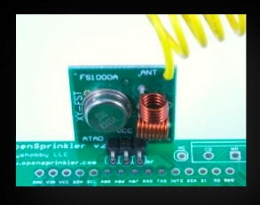
- OSPi v1: Kein dedizierter RF-Anschluss, aber
DATA/VIN/GND-Pads auf der Platine zum Anlöten.
Weitere Details finden Sie im RF-Station Blog-Beitrag.